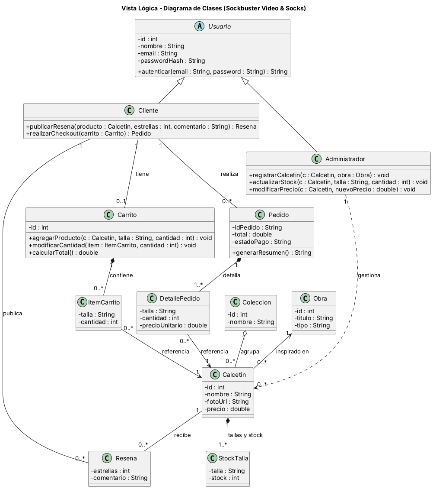
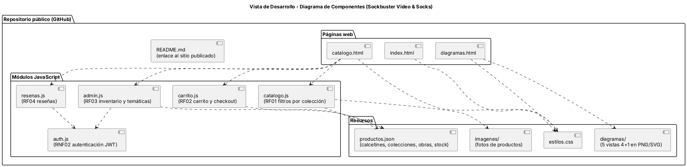
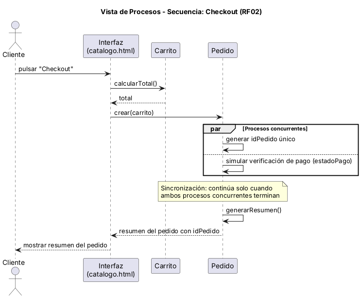
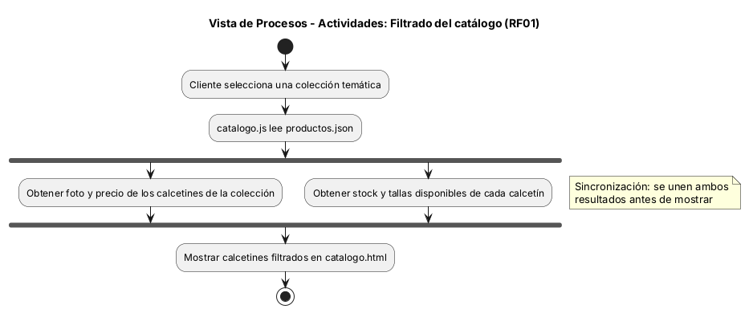
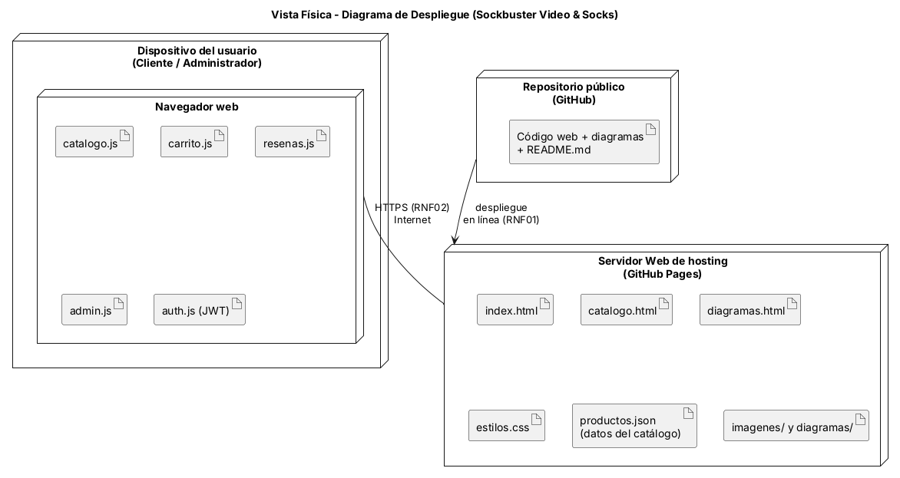
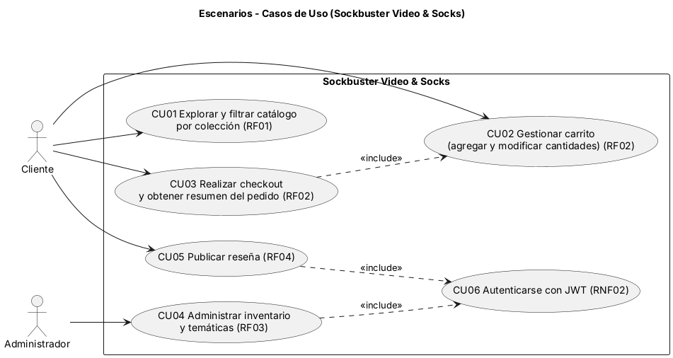

Arquitectura UML · Paradigma 4+1
Documentación técnica de Sockbuster Video & Socks organizada por las cinco vistas, modelada en PlantUML.
Requerimientos modelados
| Requerimiento | Lógica | Desarrollo | Procesos | Física | Escenario | En la web |
|---|---|---|---|---|---|---|
| RF01 Catálogo por colecciones | Coleccion, Calcetin, StockTalla, Obra | catalogo.js, productos.json | Actividades: Filtrado | Servidor web de hosting | CU01 | Filtros en catalogo.html |
| RF02 Carrito y pedidos | Carrito, ItemCarrito, Pedido, DetallePedido | carrito.js | Secuencia: Checkout | Navegador web | CU02, CU03 | Carrito y checkout |
| RF03 Administración de inventario | Administrador | admin.js | — | Navegador web | CU04 | Panel de administración |
| RF04 Reseñas | Cliente, Resena | resenas.js | — | Navegador web | CU05 | Ficha con reseñas |
| RNF01 Disponibilidad y despliegue en la nube | — | Repositorio público | — | GitHub Pages | — | Sitio publicado en línea |
| RNF02 Seguridad (HTTPS y JWT) | Usuario.autenticar() | auth.js | — | Enlace HTTPS | CU06 | Inicio de sesión con token |
Vista Lógica · Diagrama de clases

Representa la estructura del dominio con atributos, métodos, asociaciones y multiplicidades. Usuario es abstracta y se especializa en Cliente y Administrador. Coleccion agrupa Calcetin, que se inspira en una Obra (película o serie) y compone sus tallas con stock en StockTalla. El Cliente tiene un Carrito con ItemCarrito, realiza Pedido (con idPedido único y detalle) y publica Resena. El Administrador gestiona calcetines. Usuario.autenticar() entrega el token (RNF02).
Vista de Desarrollo · Diagrama de componentes

Organiza el código del repositorio público: páginas web (index, catálogo y diagramas), módulos JavaScript por requerimiento (catalogo.js RF01, carrito.js RF02, admin.js RF03, resenas.js RF04, auth.js RNF02) y recursos (productos.json, imágenes, estilos y diagramas). admin.js y resenas.js dependen de auth.js.
Vista de Procesos · Secuencia y actividades

Al pulsar «Checkout», la interfaz calcula el total en el Carrito y crea el Pedido. Dentro del pedido se ejecutan dos procesos concurrentes: generar el idPedido único y simular la verificación de pago. Se sincronizan y solo entonces se genera el resumen que se muestra al cliente.

El cliente selecciona una colección, catalogo.js lee productos.json y se obtienen en paralelo foto y precio por un lado, y stock y tallas por otro. Ambos resultados se unen antes de mostrar los calcetines filtrados.
Vista Física · Diagrama de despliegue

El dispositivo del usuario (cliente o administrador) ejecuta el navegador con los módulos JavaScript y se conecta por HTTPS a través de Internet (RNF02) con el servidor web de hosting, GitHub Pages, que sirve las páginas y recursos. El repositorio público despliega el sitio en línea (RNF01).
Escenarios · Casos de uso (5ª vista)

Dos actores, Cliente y Administrador, y seis casos de uso que cubren los RF y el RNF02. Se validan contra las otras cuatro vistas en la siguiente tabla de trazabilidad. RNF01 no es un caso de uso porque ningún actor lo ejecuta; se cubre en la Vista Física.
| Caso de uso | Vista Lógica | Vista de Desarrollo | Vista de Procesos | Vista Física |
|---|---|---|---|---|
| CU01 Filtrar catálogo | Coleccion, Calcetin, StockTalla, Obra | catalogo.html, catalogo.js, productos.json | Actividades de Filtrado | Navegador web / Servidor web (GitHub Pages) |
| CU02 Gestionar carrito | Carrito, ItemCarrito, Calcetin | catalogo.html, carrito.js | Parte del flujo de Checkout (calcularTotal) | Navegador web |
| CU03 Checkout | Carrito, Pedido, DetallePedido | catalogo.html, carrito.js | Secuencia de Checkout | Navegador web |
| CU04 Administrar inventario | Administrador, Calcetin, StockTalla, Obra | catalogo.html, admin.js, auth.js, productos.json | No modelado | Navegador web / Servidor web |
| CU05 Publicar reseña | Cliente, Resena, Calcetin | catalogo.html, resenas.js, auth.js | No modelado | Navegador web |
| CU06 Autenticarse (JWT) | Usuario.autenticar() | auth.js | No modelado | Navegador web, HTTPS |